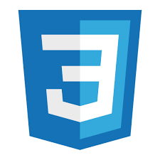

Язык гипертекстовой разметки HTML был разработан британским учёным Тимом Бернерсом-Ли приблизительно в 1986—1991 годах в стенах ЦЕРНа в Женеве в Швейцарии[3]. HTML создавался как язык для обмена научной и технической документацией, пригодный для использования людьми, не являющимися специалистами в области вёрстки. HTML успешно справлялся с проблемой сложности SGML путём определения небольшого набора структурных и семантических элементов — дескрипторов. Дескрипторы также часто называют «тегами». С помощью HTML можно легко создать относительно простой, но красиво оформленный документ. Помимо упрощения структуры документа, в HTML внесена поддержка гипертекста. Мультимедийные возможности были добавлены позже.
Первым общедоступным описанием HTML был документ «Теги HTML», впервые упомянутый в Интернете Тимом Бернерсом-Ли в конце 1991 года,[4][5]. В нём описываются 18 элементов, составляющих первоначальный, относительно простой дизайн HTML. За исключением тега гиперссылки, на них сильно повлиял SGMLguid, внутренний формат документации, основанный на стандартном обобщенном языке разметки (SGML), в CERN. Одиннадцать из этих элементов всё ещё существуют в HTML 4[6].
Изначально язык HTML был задуман и создан как средство структурирования и форматирования документов без их привязки к средствам воспроизведения (отображения). В идеале, текст с разметкой HTML должен был без стилистических и структурных искажений воспроизводиться на оборудовании с различной технической оснащённостью (цветной экран современного компьютера, монохромный экран органайзера, ограниченный по размерам экран мобильного телефона или устройства и программы голосового воспроизведения текстов). Однако современное применение HTML очень далеко от его изначальной задачи. Например, тег
Язык гипертекстовой разметки HTML был разработан британским учёным Тимом Бернерсом-Ли приблизительно в 1986—1991 годах в стенах ЦЕРНа в Женеве в Швейцарии[3]. HTML создавался как язык для обмена научной и технической документацией, пригодный для использования людьми, не являющимися специалистами в области вёрстки. HTML успешно справлялся с проблемой сложности SGML путём определения небольшого набора структурных и семантических элементов — дескрипторов. Дескрипторы также часто называют «тегами». С помощью HTML можно легко создать относительно простой, но красиво оформленный документ. Помимо упрощения структуры документа, в HTML внесена поддержка гипертекста. Мультимедийные возможности были добавлены позже.
Первым общедоступным описанием HTML был документ «Теги HTML», впервые упомянутый в Интернете Тимом Бернерсом-Ли в конце 1991 года,[4][5]. В нём описываются 18 элементов, составляющих первоначальный, относительно простой дизайн HTML. За исключением тега гиперссылки, на них сильно повлиял SGMLguid, внутренний формат документации, основанный на стандартном обобщенном языке разметки (SGML), в CERN. Одиннадцать из этих элементов всё ещё существуют в HTML 4[6].
Изначально язык HTML был задуман и создан как средство структурирования и форматирования документов без их привязки к средствам воспроизведения (отображения). В идеале, текст с разметкой HTML должен был без стилистических и структурных искажений воспроизводиться на оборудовании с различной технической оснащённостью (цветной экран современного компьютера, монохромный экран органайзера, ограниченный по размерам экран мобильного телефона или устройства и программы голосового воспроизведения текстов). Однако современное применение HTML очень далеко от его изначальной задачи. Например, тег предназначен для создания в документах таблиц, но иногда используется и для оформления размещения элементов на странице. С течением времени основная идея платформонезависимости языка HTML была принесена в жертву современным потребностям в мультимедийном и графическом оформлении.
![js]( "логотип js")
JavaScript обычно используется как встраиваемый язык для программного доступа к объектам приложений. Наиболее широкое применение находит в браузерах как язык сценариев для придания интерактивности веб-страницам[10].
Основные архитектурные черты: динамическая типизация, слабая типизация, автоматическое управление памятью, прототипное программирование, функции как объекты первого класса.
На JavaScript оказали влияние многие языки, при разработке была цель сделать язык похожим на Java. Языком JavaScript не владеет какая-либо компания или организация, что отличает его от ряда языков программирования, используемых в веб-разработке[~ 1][11].
Название «JavaScript» является зарегистрированным товарным знаком корпорации Oracle в США[12].
В 1992 году компания Nombas (впоследствии приобретённая Openwave[en]) начала разработку встраиваемого скриптового языка Cmm (Си-минус-минус), который, по замыслу разработчиков, должен был стать достаточно мощным, чтобы заменить макросы, сохраняя при этом схожесть с Си, чтобы разработчикам не составляло труда изучить его[13]. Главным отличием от Си была работа с памятью. В новом языке всё управление памятью осуществлялось автоматически: не было необходимости создавать буфера, объявлять переменные, осуществлять преобразование типов. В остальном языки сильно походили друг на друга: в частности, Cmm поддерживал стандартные функции и операторы Си[14]. Cmm был переименован в ScriptEase, поскольку исходное название звучало слишком негативно, а упоминание в нём Си «отпугивало» людей[13][15]. На основе этого языка был создан проприетарный продукт CEnvi. В конце ноября 1995 года Nombas разработала версию CEnvi, внедряемую в веб-страницы. Страницы, которые можно было изменять с помощью скриптового языка, получили название Espresso Pages — они демонстрировали использование скриптового языка для создания игры, проверки пользовательского ввода в формы и создания анимации. Espresso Pages позиционировались как демоверсия, призванная помочь представить, что случится, если в браузер будет внедрён язык Cmm. Работали они только в 16-битовом Netscape Navigator под управлением Windows[16].

CSS используется создателями веб-страниц для задания цветов,
шрифтов, стилей, расположения отдельных блоков и других аспектов представления внешнего вида этих веб-страниц. Основное различие между классами элементов и идентификаторами элементов в том, что идентификатор предназначен для одного элемента, тогда как класс обычно присваивают сразу нескольким. Тем не менее, современные браузеры, как правило, корректно отображают множественные элементы с одинаковым идентификатором. Также различие в том, что могут существовать множественные классы (когда класс элемента состоит из нескольких слов, разделённых пробелами). Для идентификаторов такое невозможно.
Важно отметить следующее отличие идентификатора от класса: идентификаторы широко используются в JavaScript для нахождения уникального элемента в документе.
Имена классов и идентификаторов, в отличие от названий тегов и их атрибутов, чувствительны к регистру ввода букв.
Свойства классов и идентификаторов задаются с помощью соответствующих селекторов. Причём может быть задано как свойство класса в целом (в таком случае селектор начинается с „.“, например, „.big“) или свойство идентификатора самого по себе (в таком случае селектор начинается с „#“, например, „#first“), так и свойство какого-нибудь элемента этого класса или с этим идентификатором.
В CSS, помимо классов, задаваемых автором страницы, существует также ограниченный набор так называемых псевдоклассов, описывающих вид гиперссылок с определённым состоянием в документе, вид элемента, на котором находится фокус ввода, а также вид элементов, являющихся первыми дочерними элементами других элементов. Также в CSS существует четыре так называемых псевдоэлемента: первая буква, первая строка, применение специальных стилей до и после элемента.
Страница с ссылками
Страница с резюме